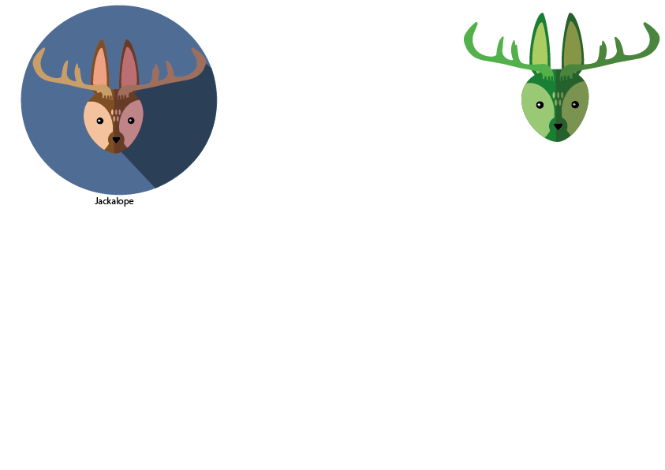

Animal icons
Animal icons is via. Adobe Illutrator.
The first week in GF2 (Grundforløb 2) where we are re-learning the programs, this time Illutrator.

Animal icons is via. Adobe Illutrator.
The first week in GF2 (Grundforløb 2) where we are re-learning the programs, this time Illutrator.